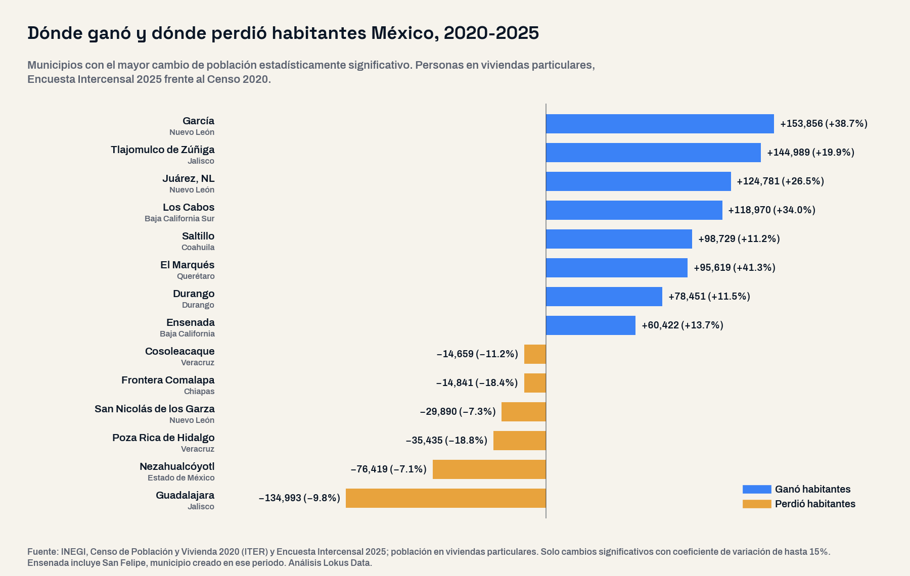
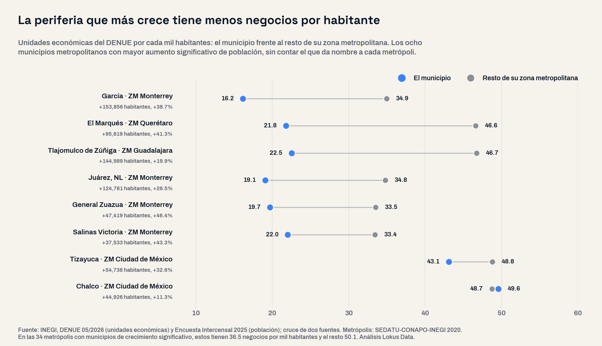

Tlajomulco ganó 145 mil habitantes y Guadalajara perdió 135 mil: el mapa de la demanda se movió a la periferia
México sumó 4.9 millones de personas y 4.5 millones de hogares entre 2020 y 2025, según la Encuesta Intercensal. La mitad del crecimiento cupo en 57 municipios y, en las metrópolis, los municipios que crecen tienen 27% menos negocios por habitante que el resto.

El panorama: 4.9 millones de consumidores y 4.5 millones de hogares nuevos
El INEGI publicó el 22 de septiembre la Encuesta Intercensal 2025, la primera medición de la población desde el Censo 2020, y con ella cambia el punto de partida de cualquier cálculo de mercado. México tiene 130.4 millones de personas en viviendas particulares, 4,878,550 más que en 2020 (+3.9%), y 39.7 millones de hogares, 4,480,101 más (+12.7%). Los hogares crecieron tres veces más rápido que la población: el promedio bajó de 3.56 a 3.29 personas por vivienda.
La pregunta de este análisis fue abierta: ¿dónde creció y dónde se redujo la población entre 2020 y 2025, y qué tienen en común esos territorios? Se ordenaron los 2,478 municipios del país por su cambio medido y solo se tomó como real el cambio que supera el margen de error de la encuesta. Este análisis actualiza con la medición el mapa de la demanda proyectado a 2040 que publicamos en julio.
La lectura de negocio
Para vivienda, muebles, electrodomésticos, telecomunicaciones o servicios al hogar, la unidad que más creció es el hogar, no la persona: 4,480,101 hogares nuevos en cinco años.
El mapa: la mitad del crecimiento cabe en 57 municipios
El crecimiento está concentrado. 57 municipios suman la mitad de todo lo que ganaron los municipios que crecieron, y las 92 metrópolis del país —donde vivían 66 de cada 100 personas en 2020— se llevaron cuatro de cada cinco nuevos habitantes. El municipio que más ganó fue García, en Nuevo León, con 153,856 personas más (+38.7%). Le siguen Tlajomulco de Zúñiga (+144,989), Juárez, Nuevo León (+124,781), Los Cabos (+118,970), Saltillo (+98,729) y El Marqués (+95,619).
Por metrópoli, la zona metropolitana de Monterrey sumó 505 mil habitantes, el mayor aumento estadísticamente significativo de las 92, seguida de Querétaro (+174,734), Saltillo (+130,299) y Mérida (+124,004).
| Municipio | Entidad | Población 2020 | Población 2025 | Cambio | Viviendas habitadas nuevas | Negocios por mil habitantes: municipio vs resto de su metrópoli |
|---|---|---|---|---|---|---|
| García | Nuevo León | 397,103 | 550,959 | +153,856 (+38.7%) | +51,388 | 16.2 vs 34.9 |
| Tlajomulco de Zúñiga | Jalisco | 726,801 | 871,790 | +144,989 (+19.9%) | +66,279 | 22.5 vs 46.7 |
| Juárez | Nuevo León | 471,395 | 596,176 | +124,781 (+26.5%) | +50,119 | 19.1 vs 34.8 |
| Los Cabos | Baja California Sur | 350,193 | 469,163 | +118,970 (+34.0%) | +47,507 | 39.0 (metrópoli de un municipio) |
| Saltillo | Coahuila | 877,748 | 976,477 | +98,729 (+11.2%) | +37,522 | 34.6 vs 28.8 |
| El Marqués | Querétaro | 231,511 | 327,130 | +95,619 (+41.3%) | +43,095 | 21.8 vs 46.6 |
| Durango | Durango | 683,730 | 762,181 | +78,451 (+11.5%) | +38,072 | 43.2 (metrópoli de un municipio) |
| Ensenada (con San Felipe) | Baja California | 440,625 | 501,047 | +60,422 (+13.7%) | +28,689 | 40.8 (metrópoli de un municipio) |
| Tizayuca | Hidalgo | 168,147 | 222,885 | +54,738 (+32.6%) | +22,762 | 43.1 vs 48.8 |
| Tapachula | Chiapas | 350,322 | 403,839 | +53,517 (+15.3%) | +22,825 | 50.2 vs 21.3 |
La demanda se movió a la periferia
Dentro de las grandes metrópolis se repite un patrón: el municipio central pierde residentes y la periferia los gana. Guadalajara perdió 134,993 habitantes (−9.8%) mientras Tlajomulco, al sur de la misma zona metropolitana, ganó 144,989. En Monterrey, San Nicolás de los Garza perdió 29,890 (−7.3%) y el municipio de Monterrey quedó prácticamente igual (−0.3%, dentro del margen de error), mientras García, Juárez, General Zuazua y Salinas Victoria sumaron 363,589 habitantes. En el Valle de México, Nezahualcóyotl perdió 76,419 (−7.1%) y Tizayuca, en Hidalgo, ganó 54,738 (+32.6%).
Son mercados jóvenes y de recién llegados. La edad mediana es de 27.4 años en García, 27.8 en Tlajomulco y 27.7 en Juárez, frente a 31.9 en el país. Entre sus habitantes de 5 años y más, 17.2%, 10.6% y 15.7% no vivían en ese municipio en octubre de 2020, cuando el promedio nacional es 5.5%.
Oportunidades y riesgos: donde llegó la gente, hay menos negocios
La oferta no se ha movido al mismo ritmo. En las 34 metrópolis con municipios de crecimiento significativo, esos municipios tienen 36.5 negocios por cada mil habitantes y el resto de sus metrópolis 50.1: 27% menos. En comercio al por menor la brecha es de 15.3 contra 21.5 (29% menos), y la diferencia aparece en 26 de las 34 metrópolis. García tiene 16.2 negocios por cada mil habitantes, menos de la mitad que el resto de la zona metropolitana de Monterrey (34.9); Tlajomulco, 22.5 contra 46.7 del resto de la de Guadalajara, y El Marqués, 21.8 contra 46.6 del resto de la de Querétaro.

Del otro lado, el municipio central que pierde residentes concentra la oferta: Guadalajara tiene 78.0 negocios por cada mil habitantes, contra 31.9 del resto de su zona metropolitana. Para una red de sucursales significa más competencia por un mercado residencial que se reduce, aunque el centro conserva a quienes trabajan y compran ahí: la Intercensal mide dónde vive la gente, no dónde gasta.
Hay un segundo riesgo: dimensionar mercados con proyecciones. En 424 municipios donde la proyección de CONAPO esperaba crecimiento, la Intercensal midió una caída significativa, y en 812 la tasa proyectada queda por encima de lo medido. Por estado, la proyección sobreestimó el crecimiento de Guerrero, Oaxaca y Chiapas y subestimó el de Baja California Sur, que creció 20.4% en cinco años.
Perfil del consumidor: dónde se achica el mercado
698 municipios perdieron población de forma significativa: suman 843,439 habitantes menos y 681 están fuera de las metrópolis. Frente a los que crecieron, su consumidor típico es mayor, con una edad mediana de 33.6 años contra 30.6; depende más del dinero que llega del extranjero, que reciben 10.3% de los hogares contra 5.2%, y vive donde el empleo formal casi no creció: +1.1% en puestos IMSS entre marzo de 2020 y marzo de 2025, contra +24.0% en los municipios que ganaron población. En 1,397 municipios, en cambio, la variación cabe en el margen de error: no se puede afirmar que su mercado creció ni que se redujo.
Antes de abrir, cerrar o reubicar un punto de venta
Separa la cifra puntual de lo que la encuesta puede sostener. Un municipio que sube 3% puede estar dentro del margen de error; uno que la Intercensal contó completo no tiene margen. La diferencia define si un mercado creció o solo parece crecer.
Insights para la acción
- Actualiza el denominador. Los 130.4 millones de la Intercensal reemplazan al Censo 2020 y a las proyecciones para dimensionar mercados: en 42% de los municipios la proyección queda fuera del margen de la medición.
- Mide por municipio, no por metrópoli. En la misma zona metropolitana conviven el municipio que más habitantes perdió del país, Guadalajara, y el segundo que más ganó, Tlajomulco.
- Busca la periferia con poca oferta. García, Tlajomulco, Juárez, El Marqués, General Zuazua y Salinas Victoria combinan población joven, hogares nuevos y entre 34% y 54% menos negocios por habitante que el resto de su metrópoli.
- Sigue al hogar. 4,480,101 hogares nuevos y viviendas con 3.29 ocupantes en promedio cambian el tamaño del ticket y la demanda de bienes para la vivienda.
- Cruza con la competencia instalada. La población dice dónde está la demanda; el estudio de mercado y el conteo de unidades económicas dicen cuánta oferta ya existe.
Conclusión
La Intercensal 2025 confirma que México sigue creciendo, pero cambia dónde. La demanda nueva se concentró en 57 municipios y en las periferias de las grandes metrópolis, con consumidores jóvenes y hogares recién formados, mientras los centros urbanos y cientos de municipios pequeños pierden residentes. La oferta todavía no alcanza ese movimiento: los municipios metropolitanos que crecen tienen 27% menos negocios por habitante que el resto de su metrópoli. Para quien decide dónde abrir, el mapa útil es el medido, municipio por municipio y con su margen de error a la vista.
Preguntas frecuentes
¿Cuántos habitantes y hogares tiene México en 2025?
Según la Encuesta Intercensal 2025 del INEGI, 130,393,389 personas viven en viviendas particulares (130.9 millones de residentes en total) y hay 39,699,242 hogares. Desde el Censo 2020 se sumaron 4,878,550 personas y 4,480,101 hogares.
¿Qué municipios ganaron más habitantes entre 2020 y 2025?
García, Nuevo León (+153,856), Tlajomulco de Zúñiga, Jalisco (+144,989), Juárez, Nuevo León (+124,781) y Los Cabos, Baja California Sur (+118,970), entre los cambios estadísticamente significativos.
¿Qué municipios perdieron más habitantes?
Guadalajara (−134,993), Nezahualcóyotl (−76,419), Poza Rica (−35,435) y San Nicolás de los Garza (−29,890). En total, 698 municipios tienen una caída significativa.
¿Dónde hay menos negocios por habitante?
En los municipios metropolitanos que crecen. En las 34 metrópolis con municipios de crecimiento significativo, esos municipios tienen 36.5 unidades económicas por cada mil habitantes y el resto 50.1. García tiene 16.2, contra 34.9 del resto de la zona metropolitana de Monterrey.
Análisis basado en la Encuesta Intercensal 2025 del INEGI (resultados publicados el 22 de septiembre de 2026), con sus intervalos de confianza por municipio, comparada con el Censo de Población y Vivienda 2020 (ITER, ocupantes y viviendas particulares habitadas, descargado del INEGI); DENUE 05/2026 (unidades económicas); IMSS, puestos de trabajo afiliados de marzo de 2020 y marzo de 2025; proyecciones de población de CONAPO, y tipología Metrópolis de México 2020 de SEDATU, CONAPO e INEGI. Consultado en la capa de datos validada de Lokus, salvo el ITER. Universo completo de 2,478 municipios reunidos en 2,466 unidades comparables con 2020: los municipios creados en el periodo se suman a su municipio de origen (San Felipe a Ensenada, Villa de Pozos a San Luis Potosí, Eldorado a Culiacán, entre otros). Se compara la población en viviendas particulares de ambos años. Cambio significativo: la población de 2020 queda fuera del intervalo de confianza de 95% de la encuesta; tablas y listas con coeficiente de variación de hasta 15%. Negocios por habitante: unidades del DENUE 05/2026 entre población de la Intercensal 2025, cruce de dos fuentes; «resto de la metrópoli» excluye al municipio. La concentración del crecimiento se calcula con estimaciones puntuales y las viviendas nuevas de la tabla son estimaciones de la encuesta. El IMSS registra el empleo formal privado según el domicilio del patrón. Clasificación SCIAN: unidades económicas del DENUE de todos los sectores; comercio al por menor, sector 46. Fecha de análisis: 25 de septiembre de 2026. Para medir la competencia, el empleo formal y el tamaño del mercado de cualquier estado o municipio con datos oficiales integrados, visita lokusdata.com